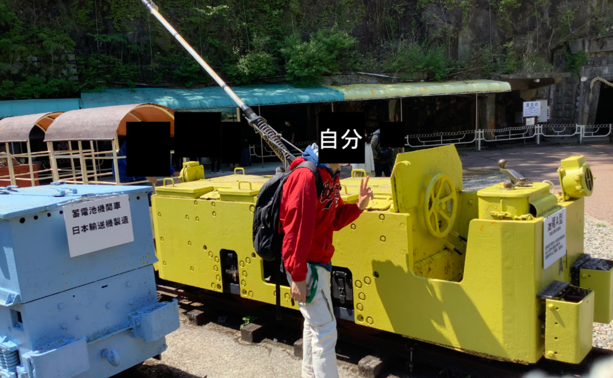
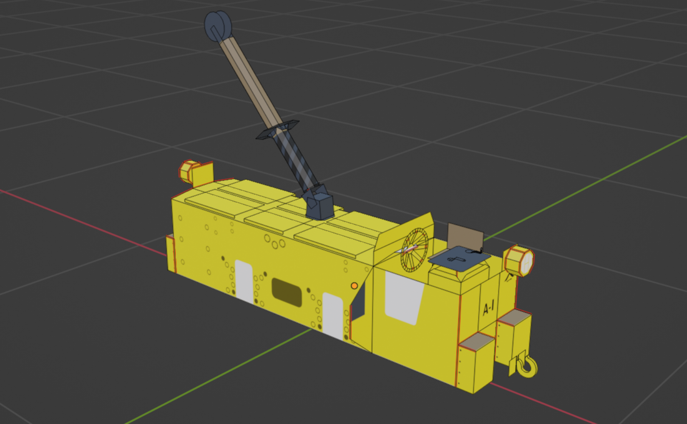

友達がVtuberをやってて楽しそうだったので作った動画
人モデル
(名前未定)
足尾銅山No47電気機関車
物理演算で走ります
足尾銅山の機関車が格好良かったのでblenderで作りました
リジッドボディとモーターで車輪を回転させて進んでいるので線路をうまく作らないと脱線します
リジッドボディとモーターで車輪を回転させて進んでいるので線路をうまく作らないと脱線します


足尾A型のNゲージ用ペーパークラフト
Export-Paper-Model-from-Blenderアドオンで作りました
足尾銅山の電気機関車をペーパークラフトにしてNゲージのチビ客車用動力ユニットに被せました
 3.印刷(予備含め3台分)
3.印刷(予備含め3台分)
 4.組み立て
4.組み立て
不器用なので荒が目立ちますが半日掛けて組み立てました。プラレールぐらいの大きさじゃないと難しいですね

1.元ネタ
2.モデリング
3.印刷(予備含め3台分)4.組み立て不器用なので荒が目立ちますが半日掛けて組み立てました。プラレールぐらいの大きさじゃないと難しいですね